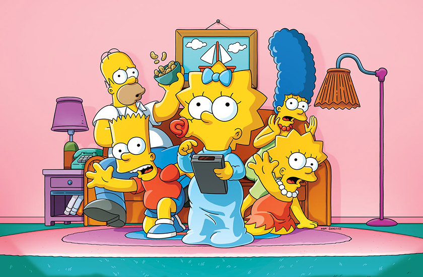

한글은 KO/kr ->이거 해두면 영ㅇ어 사이트에서 선택 창 안나옴
영어는 en
Document
로고 :글씨로된 거 반드시 하나 있어야 함
:꼭 해더 안 아니더라도 웹페이지 안에 하나는 있어야 해
:내용. 영역 확인, (포토샵으로 치면 레이어 하나)보통 내용 아무거나 다 여기다 넣어
:주제가 하나로 따로 빼도 되는 내용. 문단 (카테고리 하나)

가로를 200 픽셀로 줄인다 알아서 세로 줄어듬
이미지 넣을 때 반드시 alt 넣어야 함. 시각 장애인을 위한 텍스트 리더기가 alt 안의 설명을 읽어줌. (웹접근성에 적합한 페이지 만들기 위해서는 넣어줘야 함)
./ 현재 폴더 ../ 상위 폴더
ctrl +s : 저장된
지금 쓰는 태그 화면에 꽉차는 태그 ->100 퍼센트면 꽉차